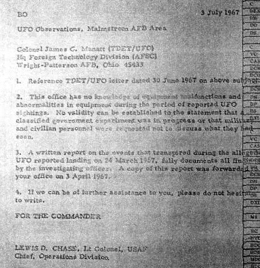

Chase, Lewis D. (Lt Colonel USAF, Chief, Operations Division), 3 July 1967
La lettre d'origine

BO
Observations d'ovnis, zone de la base Air Force de Malmstrom
Colonel James C. Mahatt (TDET/UFO) Siège de la FTD (AFSC) Base USAF de Wright-Patterson, Ohio 45433
Référence à la lettre TDET/UFO datée du 30 juin 1967 sur le sujet ci-dessus.
Ce bureau n'a aucune connaissance de défaillances ou anomalies d'équipement lors de la période des observations
d'ovni signalées. Aucune validité ne peut être établie de la déclaration selon laquelle une expérience secrète du
gouvernement était à l'œuvre ou que du personnel militaire et civil reçu l'ordre de ne pas parler de ce qu'ils
avaient vu.
Un rapport écrit sur les événements qui transpirèrent lors d'un prétendu ovni atterrissant le 24 mars 1967,
documente pleinement toutes les conclusions de l'officier enquêteur. Une copie de ce rapport fut transmise à votre
bureau le 3 avril 1967.
Si nous pouvons vous apporter une aide supplémentaire, surtout n'hésitez pas à nous écrire.